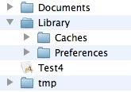
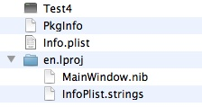
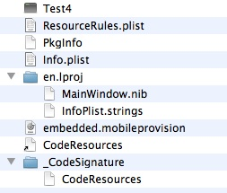
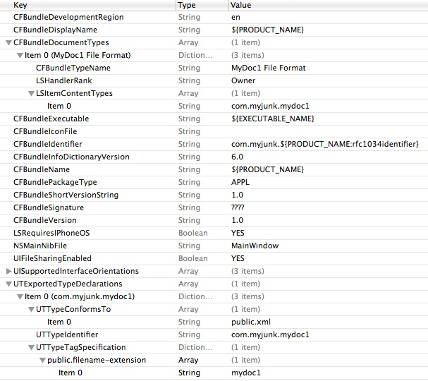
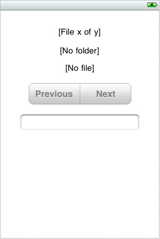
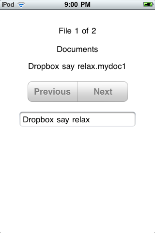

Figure 5-1. Contents of an iOS app's home directory.

Documents - create files here that you want the user to see in iTunes; user
can also copy files to and from Documents in iTunes.
Library - create files here that you don't want the user to see in iTunes.
Caches - create support files here that should persist between launches of the app.
Preferences - store app preferences and program state here.
Test4 - the app bundle (see below).
tmp - create temporary files here.
Note that files in the Documents, Library and Preferences subdirectories are backed up by iTunes when you sync the device. And when you install an update, the Documents and Library contents are copied to the new application directory.
An iOS app bundle is similar to an OS X app bundle, as shown in the two figures below. Since the app is code-signed on an actual iOS device, its bundle has several additional files.
Figure 5-2. Contents of app bundle in iOS Simulator.

Figure 5-3. Contents of app bundle on iOS device.

Since the app bundle on an iOS device is code-signed, you can't write to that directory, although you can open files there read-only (for example, additional files that you distribute with your app). In addition, your app can't read or write other apps' files; nor can other apps read or write your app's files.
It's normal to "sandbox" users on the same computer, as well to restrict user access to system files, but separating apps like this might take some getting used to. On most platforms you normally use a variety of apps to create, delete, move and copy files, whether that be with Finder, a text editor, IDE, etc. The implication of sandboxing is that this is not the way you work with files on an iOS device. So how do you do those sorts of things?
iTunes is fine when your computer is handy, but what if you only have your device? In that case, you can use either e-mail or a free service like Dropbox to copy files to your device and then to your app.
In Mail, you can select a file attachment and touch the Open In button. Mail will then display a list of apps that can open that file. Similarly, in Dropbox, you can select a file and touch the little button with the arrow. Dropbox will then display a list of apps that can open that file.
So how do Mail and Dropbox know that your app can open a particular file? You tell these (and other) apps about what types of files your app can open via its Info.plist file.
For the example app, start by creating a new app in Xcode4 using the Objective Pascal project template for a Window-Based Application. Enter Test4 for the Product Name, Test4AppDelegate for the App Delegate Class, and select iPhone for the Device Family.
Now open Test4-Info.plist in Xcode4 and add the CFBundleDocumentTypes and UTExportedTypeDeclarations sections as shown in the figure below. Use your own bundle identifier if it's different from com.myjunk. And be sure to add the UIFileSharingEnabled key as well.
Tip: If you don't see the key names, right-click and choose Show Raw Keys/Values from the popup menu.
Figure 5-4. Defining an app's file type.

If you followed the example in Part 2, the mydoc1 file extension should look familiar. In fact, the example app given in this article is essentially the mobile version of Part 2's Cocoa app. Once you have it running, you'll be able to work with files created by the Cocoa app. But first let's construct the app, which follows the familiar Model-View-Controller (MVC) "design pattern".
If you refer back to Part 2, you'll see that the Cocoa document-based app is implemented via the MyDocument subclass of NSDocument and the MyWindowController subclass of NSWindowController. MyDocument's code uses an NSXMLDocument object to read and write the .mydoc1 XML files. But the iOS Foundation framework does not include the NSXMLDocument class, and its suggested replacement, NSXMLParser, is an event-driven parser rather than a tree-oriented parser. So to keep things simple, the mobile app uses Free Pascal's XML units to implement its TMyDocument class for reading and writing .mydoc1 files.
The source for the MyDocument unit is here. Place MyDocument.pas in the Xcode project's Test4 folder where the other source files are located. Once you've done this, you can right-click Test4 in the Project navigator list and choose Add Files to add MyDocument.pas to the project if you want to be able to view it in Xcode.
Note that TMyDocument is a normal TObject descendant rather than an NSObject descendant. This means the MyDocument.pas unit can be compiled on any platform that Free Pascal supports. Also, since Free Pascal's XML units accept and return WideStrings, TMyDocument works with WideStrings too.
Test the TMyDocument class by creating several .mydoc1 files that you'll use later with the finished mobile app. For example, you can use a console app like below to create both an empty file and files with some data. You can also create .mydoc1 files by running the Test2 app from Part 2.
program CreateMyDoc;
uses
MyDocument;
var
XmlDoc : TMyDocument;
begin
XmlDoc := TMyDocument.Create;
XmlDoc.WriteToFile('empty1' + MyDocExt);
XmlDoc.SetName('Some name');
XmlDoc.WriteToFile('somedata1' + MyDocExt);
XmlDoc.SetName('Another name');
XmlDoc.WriteToFile('somedata2' + MyDocExt);
XmlDoc.Free;
end.
In Xcode 4, drop three UILabels, a UISegmentedControl and a UITextField onto the blank window and position and size them so they look something like the figure below, then change their settings as indicated.
Figure 5-5. The example app's window layout.

UILabel - set Text to "[File x of y]" and create an outlet named labelFileNum (hint: drag its New Referencing Outlet to Test4AppDelegate.h).
UILabel - set Text to "[No folder]" and create an outlet named labelFileFolder.
UILabel - set Text to "[No file]" and create an outlet named labelFileName.
UISegmentedControl
- Set Segment 0's Title to "Previous" and Segment 1's Title to "Next".
- Uncheck the Selected box for both segments and check the control's Momentary
box - that way the control will look and act like two buttons rather than a
switch.
- Create an outlet named segPrevNext.
- Create an action for the Value Changed event and name the receiving method
segValueChanged (hint: drag the Value Changed event to Test4AppDelegate.h).
UITextField
- Increase font size to 17.
- Create an outlet named textFieldMyData.
- Set Test4AppDelegate to be its delegate (hint: drag the UITextField's
delegate outlet to the yellow cube).
The layout is similar to what the user will see if Test4 can't find any files in Documents.
In a real app you would probably use a UITableView to display a list of files to choose from and a UINavigationController to create another view where the actual editing takes place, but that's beyond the scope of this article. Instead, you'll use the Previous and Next buttons for moving from one file to another, displaying the current file's number, location, name and contents in simple controls on the main view.
The complete source for the Test4AppDelegateU unit is here. You can either use this file to replace the default Test4AppDelegateU.pas file created by the project template or copy and paste its contents over the default code.
The Test4AppDelegate class uses some routines from the NSHelpers string-conversion unit. The source for the NSHelpers unit is here. Copy NSHelpers.pas into the project's Test4 folder with the other source files. You can also add it to the project if you want. If you want to use NSHelpers in other projects, you might consider compiling it the way you did the iPhoneAll unit and placing NSHelpers.o and NSHelpers.ppu in the same locations as the iPhoneAll compiled files. (You can use the same compile-arm.sh script so that the compiled NSHelpers.o file contains both armv6 and armv7 code.)
The Test4AppDelegate class is the most complicated part of the example app and several of its methods merit some discussion.
This method is called when the app is launched. It gets the names of all files in the Documents directory and adds the names of all .mydoc1 files to a TStringList object it creates. It then gets the name of the file it had open the last time it was run (from the app's Preferences). Then it determines if the file still exists and, if so, prepares to open it. However, if the app was launched as a result of a request to open a file that's been copied to the app's Inbox, it delays opening the last-used file.
Note that iOS has a case-sensitive file system. Comparisons of file names and extensions can be done with ordinary comparison operators (=, <>) rather than with, say, the SameText function as you would on Windows.
This method is called with the name of the requested file to open. It attempts to move the file from the app's Inbox to its Documents directory. If successful, it opens the file. If a file with the same name prevents the move, it deletes the file from the Inbox, displays an alert to the user, and opens the file the app would have opened if launched by the user.
The Inbox directory (under Documents) is used as kind of a "staging" area. Your app can move files from Inbox or delete them once it has copied them elsewhere, but it can't create files in the Inbox directory.
In a real app you would probably want to prompt whether it's okay to overwrite the file or perhaps rename the file rather than just rejecting it the way this method does.
This method is called when the app is about to enter the background state or terminate. It saves the name of the currently open file in the app's Preferences directory so it can reopen the file the next time the app is launched by the user.
Now copy some .mydoc1 files into the Documents directory of where the app is installed in the Simulator. On my system, it's located here:
~/Library/Application Support/iPhone Simulator/4.2/Applications/030FC85D-03C5-4BA0-B45F-BA13FAC4B7FBThis path indicates that the app was compiled with a deployment target of iOS 4.2. The long sequence of hex digits is the application ID and will be different on your computer.
Now when you run the app in the Simulator you should see the number of files you copied into Documents and the first file open in the app. If you edit the file's content, the change will be saved automatically when you move to a different file or press the Simulator's home button.
Next build and run the app on an iOS device. Once you have it working, shut down the app and copy one or more .mydoc1 files to the app's Documents directory via iTunes.
Finally, send a .mydoc1 file as an e-mail attachment or copy it into the Dropbox folder on your computer, then try opening the file in your app from Mail or Dropbox on the iOS device.
The finished iOS app should look something like the figure below.
Figure 5-6. The finished app.

Dropbox does not share files via iTunes. Instead, Dropbox client apps on OS X, iOS, Windows, etc. all use a "REST API over HTTP" to copy files to and from the Dropbox server. Your app can use this API too and Dropbox provides an Objective C SDK for that purpose. Your app would then be able to copy files to and from the Dropbox server without user intervention. More information is here.
Dropbox currently provides 2GB of space for free. This should be plenty if you're only using it to move files between computers and devices. If you need more space, you can pay for it. Note that Apple's iCloud will likely provide similar services.
macpgmr (at) fastermac (dot) net
First posted July 23, 2011; last edited Dec. 30, 2011.